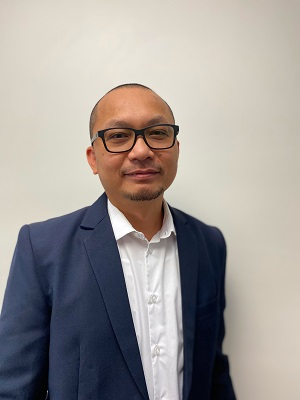

Vic Tagos

Summary
I am a contact center consultant with over 15 years of experience in the industry. I spent 8 years with Five9 and helped implement hundreds of customers in all levels of complexity. I also started and headed the growth of Five9's professional services team in the Philippines, mentoring many of their leaders now. I also have worked for NICE inContact (CXOne) handling Enterprise implementations which has given me a wider pespective into the CCaaS space.
Education
- Bachelor or Arts in Philosophy - University of the Philippines (2001)
Work Experience
Senior Consultant - DecisivEdge Inc | Toronto
May 2022 - present
- Provide analysis of call center systems and processes
- Recommend quick hits or improvements that can be easily achieved with the existing environment
- Provide roadmap for transformational inititives
- See my DecisivEdge page here
Implementation Supervisor - Five9 Inc | Mandaluyong, Philippines
April 2021 to May 2022
- Oversee customer implementations handled by direct reports
- Mentor implementation managers by evaluating performance and provide guidance on how to improve
- Work with other supervisors and managers in steering policy and look for opportunities to improve department contribution to company
-
Staff Implementation Manager - NICE inContact | Taguig, Philippines
March 2020 to April 2021
- Lead implemenation for Enterprise customers
- Subject Matter Expert for Outbound dialing/Personal Connection
- Created standard for implementing Chat
Skills
- Five9: ⭐️⭐️⭐️⭐️⭐️
- NICE CXOne: ⭐️⭐️⭐️⭐️
- Intelligent Virtual Agent: ⭐️⭐️⭐️⭐️
- Verint: ⭐️⭐️⭐️⭐️
Awards and Certifications
- President's Club
- Five9 Triple Crown
- Prince2 Fundamentals
Others